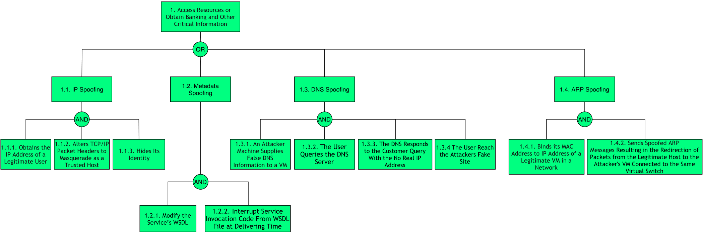
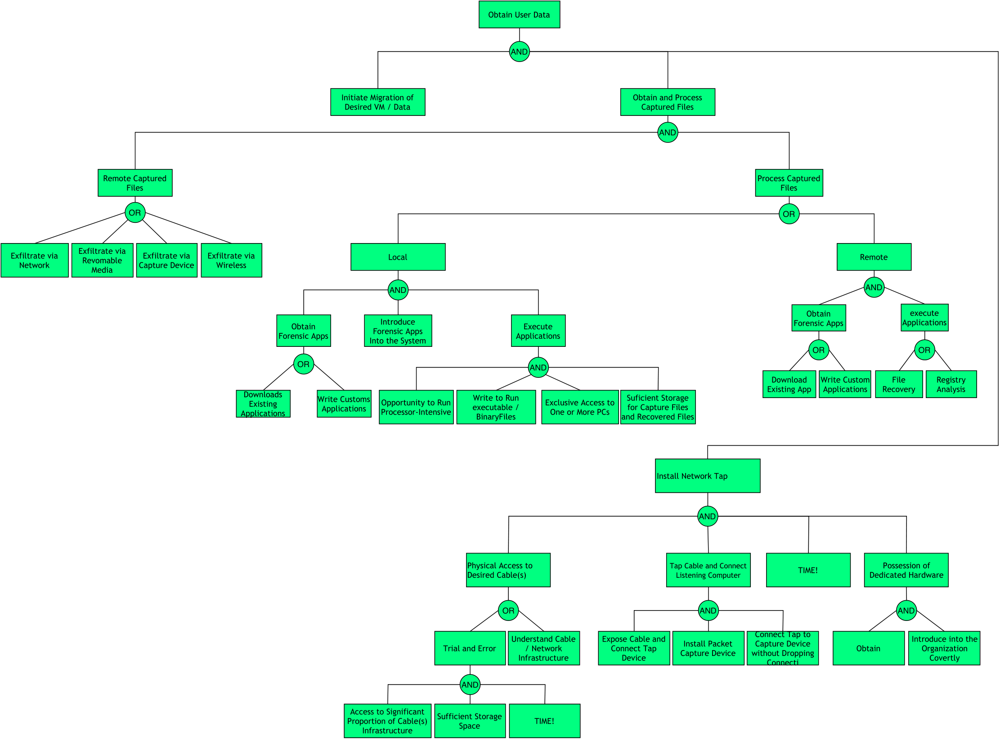
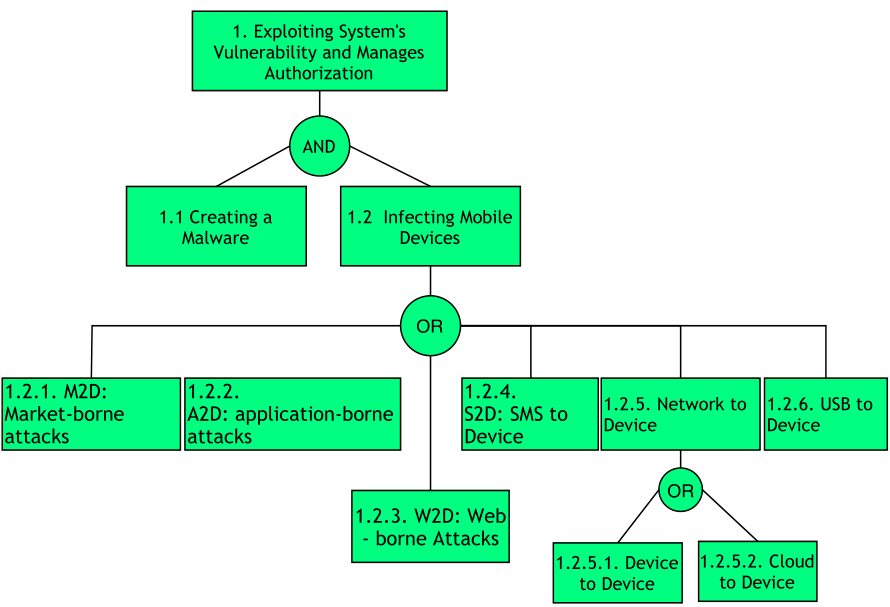

| Mobile Plataform | Android App |
| Application domain type | m-Health |
| Authentication | Yes |
| Authentication schemes | Biometric-based authentication ; Factors-based authentication ; ID-based authentication |
| Has DB | Yes |
| Type of data storage | SQL |
| Which DB | SQLite |
| Type of data stored | Personal Information ; Confidential Data ; Critical Data |
| User Registration | Yes |
| Type of Registration | The users will register themselves |
| Programming Languages | Java |
| Input Forms | Yes |
| Upload Files | Yes |
| The system has logs | Yes |
| The system has regular updates | Yes |
| The system has third-party | Yes |
| System Cloud Environments | Private Cloud |
| Hardware Specification | Yes |
| HW Authentication | Basic Authentication (user/pass) |
| HW Wireless Tech | 3G ; 4G/LTE ; Bluetooth ; Wi-Fi |
| Data Center Phisical Access | Yes |
In a DoS attack scenario, the attacker attempts to disrupt the network or disable services provisioned by a server by sending uninterrupted data packets to the target server and without changing nodes, data packets, or decrypting encrypted data. Typically, these data packets take up bandwidth and consume server resources.
In such attacks, the attacker attempts to prevent a service or feature that is signed by authorized users from being released by launching various types of floods - SYN flooding, User Datagram Protocol (UDP) flooding, Internet Control Message Protocol (ICMP) attacks ) flooding, etc - on the server.
In order to ensure that the mobile application is resilient or immune to the DoS attacks, it is recommended that the measures described in the good practice report and the security tests present in the full report are followed.
Distributed Denial of Services (DDoS) is an enhanced DoS attack type, originating from multiple network attack surfaces that were previously compromised to disrupt the services or resources provided by the target server. It differs from DoS in that it generates more traffic, so that the targeted server cannot handle requests.
The DDoS attack attempts to make a service unavailable to intended users by draining the system or network resource. Attackers can now launch various DDoS attacks, including resource-focused attacks (eg, network bandwidth, memory, and CPU) and app-focused attacks (eg, mobile applications, database service) from almost every attack. places.
n order to ensure that the mobile application is resilient or immune to the DDoS attacks, it is recommended that the measures described in the good practice report and the security tests present in the full report are followed.

In a nutshell, spoofing attacks consist of spoofing the caller ID in order to impersonate a trusted entity and thus obtain confidential information in a disguised manner.
In this type of attack, the attacker can spoof the "Caller ID" and impersonate him as a legitimate user, i.e., an attacker could spoof the "Caller ID" and impersonate a trusted party. Recent studies have also shown how to spoof MMS messages that appeared to be messages from a number that operators use to send alerts or update notifications. In addition, base stations can also be counterfeited. On the other hand, there is also the mobile application spoofing attack, which consists of an attack where a malicious mobile application mimics the visual appearance of another one. The goal of the adversary is to trick the user into believing that she is interacting with a genuine application while she interacts with one controlled by the adversary. If such an attack is successful, the integrity of what the user sees as well as the confidentiality of what she inputs into the system can be violated by the adversary.
To ensure that the mobile application is resilient or immune to Spoofing attacks, it is recommended that the measures described in the good practice report and the security tests present in the full report are followed to ensure authenticity, integrity, privacy and authenticity of the data.

A malicious user can start or redirect the migration process to a different network in which he has access or untrusted host, or it can just be copied and used elsewhere, which compromise the VM with the passwords, credentials on it and in case of coping it makes it difficult to trace the attacker.
VMs roll back to their previous state if an error occurs. Unfortunately, this factor can re-expose them to security vulnerabilities, and attackers can gain benefit to attack on this compromised hypervisor. It is important to protect the data during migration. In fact, this is the defending of data privacy and integrity from various network attacks during migration. Live migration might be susceptible to many attacks like ”man-in-the-middle”, ”denial-of-service” and ”replay. The data during the migration can be sniffed or tampered easily as it is not encrypted.
To ensure that the mobile application is resilient or immune to VM Migration attacks, it is recommended that the measures described in the good practice report and the security tests present in the full report are followed to ensure authenticity, integrity, privacy, confinement, and authenticity of the data.

This type of attacks ocurre when there is a malicious entity (client, employee, Hypervisor, Cloud Provider/Broker, etc.) takes advantage of its privileges to covertly carry out any malicious activity such as information theft and data destruction or physical infrastructures.
Malicious Hypervisor, Malicious Clients, Malicious Cloud Provider/Broker, etc. are all the other terms which can also be used as an alternative to malicious insiders. This kind of attack occurs from client to server when the person, employee or staffs who know how the system runs, can implant malicious codes to destroy everything in the cloud system.
In order to ensure that the mobile application is resilient or immune to Malicious Insiders attacks, it is recommended that the measures described in the good practice report and the security tests present in the full report are followed.

This type of attack occurs when an application escapes from the VM and gains control of VMM, as it escapes the VM privilege and obtains the root privilege.
VM escape is where an application running on a VM can directly have access to the host machine by bypassing the hypervisor, being the root of the system it makes this application escape the VM privilege and gain the root privilege. In this type of attack the attackers attempt to break down the guest OS in order to access the hypervisor or to penetrate the functionalities of other guest OS and underlying host OS. This breaking of the guest OS is called as escape. If the attackers escapes the guest OS it may compromise the hypervisor and as a result it may control over the entire guest OS. In this way the security breach in single point in hypervisor may break down all the hypervisor. If the attacker controls the hypervisor, it can do anything to the VM on the host system.
To ensure that the mobile application is resilient or immune to VM Escape attacks, it is recommended that the measures described in the good practice report and the security tests present in the full report are followed to ensure authenticity, integrity, privacy, authenticity and confinement of the data.

Side-channel attacks are used to extract cryptographic keys from a victim device or process in a virtualized layer of the cloud ecosystem where a Cross-VM attack exploits the nature of multi-tenancy, which enables that VMs belonging to different customers may co-reside on the same physical machine.
The side-channel attack takes advantage of low-bandwidth message channels in a system to leak sensitive security information. There is no doubt that this type of attack exists and is real for today's computer systems, including modern smartphones and tablets. Here we highlight the cache-based side-channel attacks that have been used to steal cryptographic information from a single OS. Furthermore, the weak link is in the fact that cryptographic algorithms usually have data-dependent memory access patterns, giving the possibility of being revealed by the observation and statistical analysis of hits / errors from the associated cache. Recent research has shown attackers can build up cross-VM side channels to obtain sensitive information. However, currently these channels are mostly based on shared CPU cache, networks, CPU loads and so on. These attacks are generally categorized into one of three classes:
In order to ensure that the mobile application is resilient or immune to the side-channel attacks, it is recommended that the measures described in the good practice report and the security testing present in the full report are followed.
Cross VM Attacks Diagram

This type of attack occurs whenever a user can install malware on a mobile device. In addition, this type of attack can be carried out remotely or locally.
Attacks on the cloud and mobile application-level ecosystem can affect the integrity and confidentiality of data and applications through different strategies. E.g., by injecting malware. Malware can be virus, worm, trojan, rootkit and botnet.
To ensure that the mobile application is resilient or immune to malicious Malware Injection attacks, it is recommended that the measures described in the good practice report and the security tests present in the full report are followed to ensure authenticity, integrity and authenticity of the data.

In this type of attack an attacker preforms physical modifications on the hardware where the software is implemented.
This type of attack occurs whenever an unauthorized user has physical access to the device. When this access is realized, it is possible to loss, leakage, access or unintentionally disclose of the data or applications to unauthorized users, if the mobile devices are misplaced, lost or theft.
To ensure that the mobile application is resilient or immune to malicious Tampering attack, it is recommended that the measures described in the good practice report and the security tests present in the full report are followed to ensure authenticity, integrity, privacy and authenticity of the data.